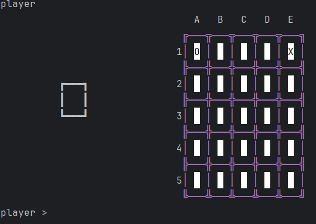
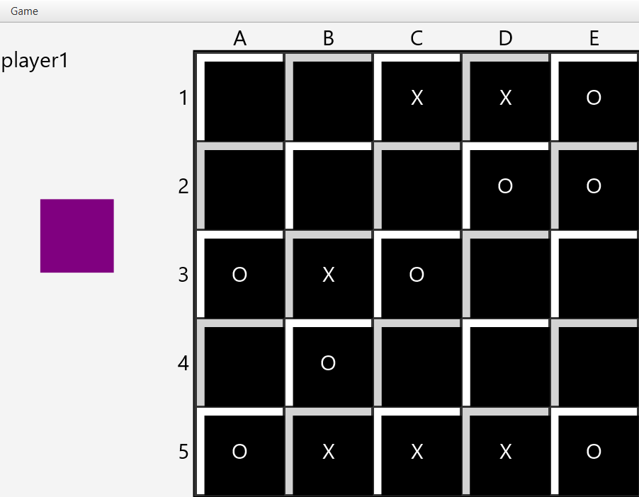

Quixo
Java
JavaFX
Communication
Projet en équipe
Quixo est un projet de jeu de société sur plateau, entièrement développé en Java avec l’interface graphique JavaFX. Il s’agit d’une adaptation numérique du célèbre jeu de réflexion, où deux joueurs s’affrontent pour aligner cinq symboles identiques.
L'image 1
L'image 2 nous montre un aperçu de l’état du plateau de jeu, affiché sous forme textuelle ou console. Cela permet notamment de tester la logique du jeu sans interface graphique, durant les phases initiales de développement.
Cette 3e image nous révèle le plateau de jeu dans sa version graphique, développée avec JavaFX. Les joueurs peuvent interagir avec les cases de manière intuitive grâce à une interface plus agréable et ergonomique.
L'image 1
L'image 2 nous montre un aperçu de l’état du plateau de jeu, affiché sous forme textuelle ou console. Cela permet notamment de tester la logique du jeu sans interface graphique, durant les phases initiales de développement.
Cette 3e image nous révèle le plateau de jeu dans sa version graphique, développée avec JavaFX. Les joueurs peuvent interagir avec les cases de manière intuitive grâce à une interface plus agréable et ergonomique.


